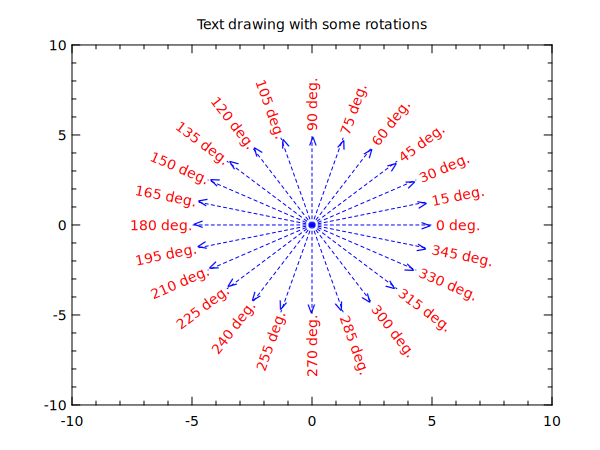

title "Text drawing with some rotations"
@ pi=3.14159265
div 1 1
box -10 10 -10 10
println 0---------50--------100%
do deg 0 345 15 ; # rotation angle from 0 to 345 with step 15 (deg.)
@ t=[pi]*[deg]/180
@ x=5*cos([t])
@ y=5*sin([t])
line 0 [x] 0 [y] (lc:blue lt:dot ae:1)
@ tpos = 90<[deg]<=270 ? 1 : 0
text [x] [y] " [deg] deg." (tr:[deg] tc:red tp:[tpos])
wait 0.2
print o
end
print \n
